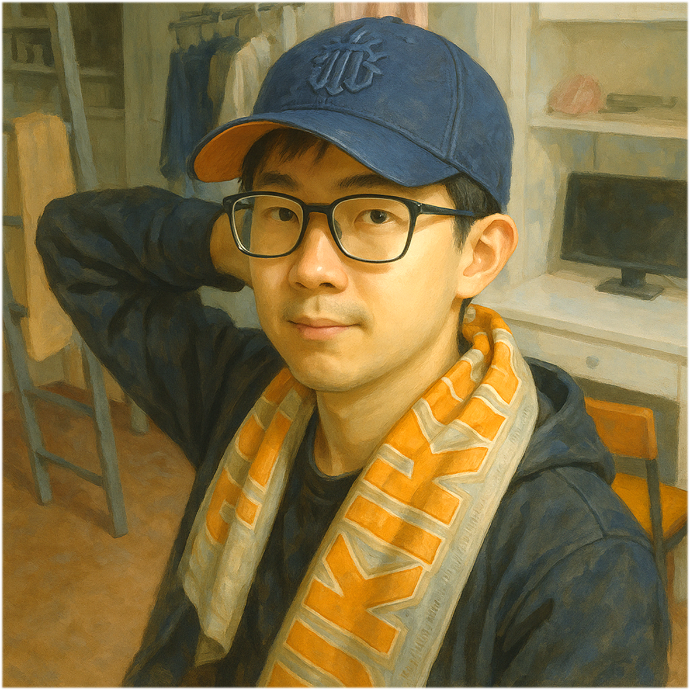

Illustration

Gender
♂️ - 男生
Goal
發表五篇以上非垃圾論文
Ability
# 書卷獎 -
抽牌階段，你已發表論文是最多的，則可以多抽一張手牌。
# 您可不可以先做我想做的 -
發表非研究題目相關的論文，可以發動今晚加班。
# 負重前行 -
研究題目與你相同的研究生肄業時，你獲得他所有手牌。
## Turnkey Solution -
當有研究生擺爛，你接手他擺爛不發表的論文進行研究，並且可以用手牌偽造。
Trivia
「書卷獎」電機系大學部 Top 1. 的超級學霸
諸葛小劉早早就練成了「拿書卷獎如喝水」的神技。只要有成績排名，他必榜上有名。
認真如他，早早在大二第一學期就加入實驗室（註：通常都是第二學期末才開始找實驗室）
成為實驗室裡最年幼、卻也最聰慧的先鋒部隊。
但是小劉並不知道，前方竟充斥著魑魅魍魎等著他…
「您可不可以先做我想做的」今年 IC Contest 開出總獎金高達 70 萬元
消息一出，所有 IC Lab 血脈噴張。除了現金誘人外，得獎更是推甄助攻與履歷加分的絕佳利器。對於一心追求卓越的諸葛小劉來說，這當然是「非參不可」的夢幻戰場。
不過，參賽所需的工具軟體須經由指導教授核准才能申請使用。於是，諸葛小劉選在 Lab 的週會上，滿懷期待地向 Prof. 蛋頭博士遞出了他的申請。沒想到，這一開口竟如同在火藥庫裡丟進一根點燃的香菸…
時值產學合作計畫的期中報告死線逼近，小劉參與的計畫進度陷入泥淖：一來隊友戰力羸弱、反應遲鈍，二來小劉心思常常不在產學、魂飛比賽，教授早已看得七七八八。這回一聽他又想分心參賽，Prof. 蛋頭博士終於爆炸，當場狂噴：
「你都一直在做對你自己有幫助的事情，那些事情我根本不在乎！老師真正在乎的事情你都沒做，您可不可以先做我想做的？」
追求個人自身利益本就沒什麼錯，但是既然選擇參與計畫確實就該負責。
誰叫你當初聽不進去學長的勸告呢：）
「負重前行」你或許會好奇？ 為何理應眾人齊心協力完成的產學計畫
成敗最後竟都落在諸葛小劉一人肩上？那就不得不好好介紹一下他那些「優秀的」隊友們。
首先是計畫 leader，碩二資深學姊珊珊姊，精通演戲與巧取，對事一竅不通、對人算計甩鍋，可謂是深諳世事的高手！
再來是與小劉同屆的隊友，形象上的豬隊友一枚，經常容易卡在一些小地方繞圈子，三天兩頭還在問相同問題，事情自然難以推進。
加上兩位隊友先天的 Buff 加成，以及教授對優等生的 Debuff 態度，諸葛小劉自然而然地被推到風口浪尖。
諸葛小劉瘦弱的肩膀上還得扛起他們，一步一蹣跚、負重前行，實在走不動…
不是不尊重，是這兩尊真的太重。
「Turnkey Solution」中文名為「一站式解決方案」
這是諸葛小劉參與的產學合作計畫。
原意是指開發者在專案中將所有需求與功能打包妥當、調整到位，交付後使用者只需「轉開鑰匙」，便能直接上手使用。
起初合作廠商的美好願景，是希望將多項功能整合進自家產品中，打造出堪稱夢幻的終極應用。但在結案臨近之際，這些功能到底有沒有完成？有沒有整合？其實也不清楚。
確定的是，經歷這次計畫的洗禮…
他 — 諸葛小劉 — 就是 Turnkey Solution！
具體的運作方式如下：
「當有人擺爛不做事，你接手她擺爛的事情進行研究，最終提出解決方案，而她只需『轉開鑰匙』便能輕鬆享受成果」
這或許就是參與計畫的最大收穫。
你真正意義上的變強了，但可能你的心再也回不去了…
#SoC #Undergrad